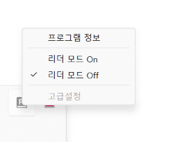

1단계: 크롬 보안 DNS 설정
아래 예시 이미지처럼 [보안 DNS 사용] 스위치를 켜고 Cloudflare(1.1.1.1)를 선택해야 합니다.
[참고 이미지]

아래 버튼을 눌러 주소를 복사한 뒤 브라우저 최상단 주소창에 붙여넣고 엔터를 치세요.
2단계: 설정창이 잠겨서 안 눌릴 때 (PowerShell 명령어)
설정 창이 회색 자물쇠로 막혀있다면 아래 버튼을 눌러 명령어를 복사하세요.
▶ 관리자 권한 PowerShell 실행법
- 윈도우 화면 왼쪽 아래 시작 버튼을 마우스 오른쪽 클릭합니다.
- 메뉴에서 [터미널(관리자)] 또는 [Windows PowerShell(관리자)]를 켭니다.
- 창이 뜨면 위에 복사한 명령어를 붙여넣고 엔터(Enter)를 칩니다.
- 크롬이 꺼지면 다시 켜서 1단계를 다시 진행하세요.